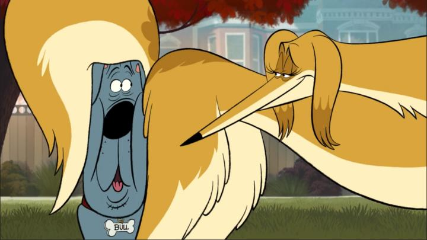

"Fixed" should be a fun movie to write about on the internet...I remember when this was first announced to enter production, roughly in the late 2010's. Genndy Tartakovsky was an darling of the animation industry, having cut his teeth defining Cartoon Network's biggest hits decades earlier ("Dexter's Labratory," "The Powerpuff Girls" and "Samurai Jack" were all his), and finding success with feature films like "Hotel Transylvania." His exaggerated character designs and cartoonish animation style were unique and aspiring, and later in his career, he was more willing to take risks with adult-oriented stories, like the "Primal" series in 2019. "Fixed" would be an R-rated comedy... great! And it would be a 2D animated feature film! Double great! Surely, this could only be a blazing success... right?But the theatrical release was put in jeopardy, rejected by both Sony Pictures (who produced the film) and Warner Bros (whose recent theatrical mishandlings have destroyed their reputation for decades to come). Eventually, Netflix saved it, but for an exclusive streaming release. And a short teaser trailer finally came out in 2025, weeks before the release, setting the animation style and tone. Backlash on the internet was quick and harsh: "this looks bad!" said every video thumbnail. I couldn't help but laugh. From the moment the title, synopsis, and first image of a fat grey dog was released, I think around 2023, I KNEW this movie would be bad, that a theatrical release was unlikely, and that no executive in their right mind would have greenlit it. Nothing here was a surprise. What is a surprise is that "Fixed" isn't that bad, and depending on your tastes in movies, it's kinda good. But I'll get to that later.Anyway, why did I have low hopes for "Fixed?" Because this was clear from the start not to be some "return to the glory days of 2D animation." The early shots and designs were clearly harkening back to Genndy's early days of television animation, with simple, stylistic designs, not to look cool or marketable, but to look goofy. As much as I adore 2D animation, and while I certainly respect Genndy and his career, I don't think his strengths are with 2D. Instead, his talents were revealed with 3D animation, and his willingness to experiment and push unrealistic character designs, perspectives, and body movements to mimic old-school cartoons - to bring to best of 2D animation into 3D. Even his more recently 2D work, notably all for television, never looked as impressive to me as any of the "Hotel Transylvania" series. In American productions, there's typically a giant leap in quality from television to theatical, naturally due to budget and time constraints, and television shows have suffered for it. Throw in that this would be an R-rated comedy with a simple hook to anchor a string of crude jokes, like the Seth Rogan-backed "Sausage Party," or whatever Seth MacFarlane work you saw recently, all known for cheap animation and questionable humour, and not typically subject to meaningful praise or acclaim. So yeah, I wasn't looking forward to "Fixed," and I can't imagine why anyone would. If it wasn't for an early theatre screening at the Fantasia Film Festival, I wouldn't have seen it at all. And based on the screening only being half full, despite the prestige of the director (who was graciously in attendance), I imagine public sentiment is similar. The story: it's a comedy from the point of view of dogs. Bull is an average housedog who has the natural tendency to hump everything in sight, most of all old Nana's wrinkly-soft legs. He's also the only one left in his circle of friends at the dog park to have not yet been spayed or neutered, a fact to which he's quite proud. But he comes home one day, and sees the signs... his human owners are nicer than usual... oh God, he's going to get snipped tomorrow! The movie goes on from there, first with Bull trying to escape his family and wander the city at night, then with his friends helping him live out one last night to remember his balls by. At the heart of it all is a sweet will-they-won't-they love interest between Bull and the tall and slender showdog Honey next door - they grew up next to each other, secret pine for each other, and would probably be happiest spending this last night with each other, but neither has admitted their feelings and they each feel out of the other's league. You can probably guess the plot from the rest. It's safe to assume this is one of the most vulgar animated films ever produced, in part because it can get away with things, with the cast all being fictional dogs. But it's not beyond what we've seen with live-action films... heck, 2023's "Strays" is 50% the same film. But it's also directly comparable with films like "The Hangover," or personally, like "American Pie" and the string of comedies those produced, where a group of buddies do stupid adult things. In "Fixed," we see drawn balls swinging back and forth (thankfully, no other male or female genitalia is rendered). We see dogs eating things they shouldn't be eating, like cat poop. We see dogs tearing a live squirrel to shreads. We see dogs under the influence of drugs. Plenty of casual swearing. Plenty of sex talk and on-screen dog-on-dog sex in a variety of positions you might not be expecting. Now I'll ask a question: did you laugh at the thought of any of the things in the previous paragraph? Are you lying? "American Pie" was extremely successful, spawning several theatrical and direct-to-video sequels, and dozens of inspired comedies, all of which know they are extremely stupid and bank of their shock value. These would not have been successful if people didn't like it. Why should an animated film be treated any differently? I'll put it simply: if "American Pie" is one of your old favourites, and if you like dogs, you'll adore "Fixed," hands down. Personally, I (and not my teenage puberty self) hate "American Pie" and everything it stands for.  BUT EVEN I, sitting in a theatre, could appreciate the frequent laughter, ranging from "HA!" to "OOOOHHHH NOOOO!!!" and "AAAAHHHH." In a crowd setting, even I joined in. The viewing experience changes everything. Comedies work better in crowds. There's less judgement to laugh when the people in front of you are laughing too. There's a secret to that, but of course, if you can only watch it at home on Netflix, it's likely you won't be seeing this is its best possible setting. There is one major flaw in the writing - Bull himself. He's self-centered and is an idiot. He's also oddly self-aware - especially in the first third, there are several scenes where Bull will look at other dogs or at humans, and have Seinfeld-like observed annecdotes, like "what is the deal with sniffing each other's butts?" To which other dogs around him might shrug or make a uninspired reply. "Fixed" does have some clever jokes about dogs, but these clips are the bottom of the barrel, and don't fit in a medium as visually-focused as animation. They also make Bull appear more intelligent than the other dogs, which... I doubt. His behaviour towards his humans and his friends makes him easy to hate, and I secretly wished he got run over by a car (he in fact does, but unlike other characters in the film, being an important character allows him to survive unharmed). Sure, this allows for growth, and Bull does redeem himself at the end in a way you won't expect ("OOOOHHHH NOOOO!!!" went the theatre audience in that scene), but it restricts how much fun I can have with Bull on screen. Like any episode of "Family Guy," you'd only watch "Fixed" for the comedy and not for the animation quality. Sure, the movie might be the best 2D animation we've seen yet from Genndy, but only because his television-budget work prior to this never looked great on their own terms. Character designs are wild cartoons, animation is clearly Flash-driven, with a few inconsistent shots that use pencil-like vector outlines compared to the bolder outlines everywhere else. It's odd... I'd be much more forgiving if this was a newspaper comic (in fact, a comic-book version of "Fixed" would be awesome), but even with somewhat smooth and detailed face movements when speaking, the art never looks great in motion. There are some odd moments of inspiration here and there; the background art looks like simplified, stylistic versions of what we got in "101 Dalmations," and a few visual shots directly recall the work of Tex Avery (I'm specifically thinking of a tiny cat when I write this). But I'm grasping at straws... when such gorgeous work in 2D animation continues to come out of Japan and Europe, and America's 2D work has continued to look like... this... is this really the best our artists are capable of after the Disney bust of 2011? It's worth briefly mentioning the voice cast, which helps save the movie. There's a strong voice cast here, all great in their roles and game for the script. Idris Elba and Kathryn Hahn, Fred Armisen, all excellent to both make us laugh and make us care. Even Adam DeVine as Bull, as nasally as he is, fits the role in spite of the characterization. It was a little awkward seeing this in a not-sold-out theatre (after a string of other sold out animation screenings) with Genndy Tartakovsky himself in attendance, receiving a career-achievement award. He also gave a moderated after-screening interview that helped me appreciate the production more. It included details like how television-level 2D was planned from the start due to a low budget, but that by bringing animators he admired from across the internet (Sony's internal animation studio probably had few in-house 2D animators - like every other major studio), he was impressed and giddy with the result. He mentioned test screenings had tons of laughter, but those same audiences scorred the film poorly, and lamented that perhaps viewers didn't want to admit they laughed at 86 minutes of sex jokes. And he sounds more committed than ever to produce adult animation, whether that's in comedy or action, or even more unexplored genres. Whether or not I respect "Fixed," I definitely respect the man behind it, and hope he continues to find funding to produce whatever he likes, regardless if I'd like it.I fully expected to hate "Fixed," but true to the claim, there is a lot of heart behind the misadventure for these underdogs. And most importantly, I got to see it in the best way possible, with a crowd, helping me enjoy a genre of film I usually despise. And I'll suggest the same to you: give the movie a proper chance, and host a dozen or so adult friends to watch the Netflix stream with you, maybe with alcohol involved. As typical with alcohol, you might wake up the next morning with sickness and regret, but also perhaps with the vague memory of fun, enough so to be open to another night of something stupid tomorrow.
- "Ani" More reviews can be found at : https://2danicritic.github.io/ Previous review: review_Fireworks Next review: review_FLAG